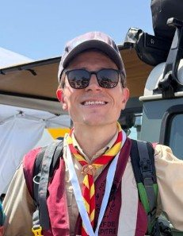
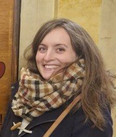
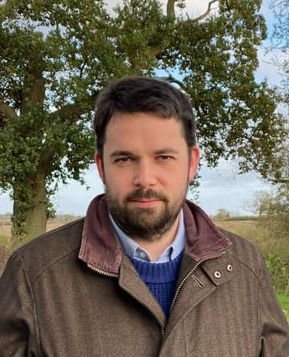
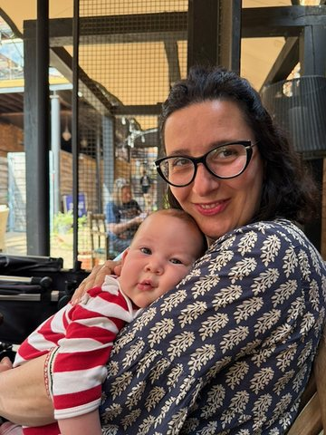
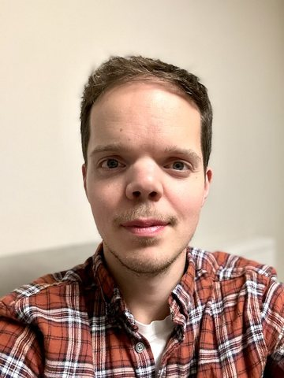
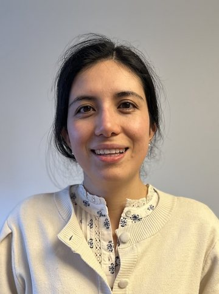

Foi. Culture. Aisance.
Former des catholiques qui parlent les langues avec aisance, enracinés dans les cultures de la chrétienté.
Languages for Catholics est né d’une conviction simple : une langue s’apprend le mieux avec la culture qui l’a façonnée. Pour le français, l’italien et l’espagnol, cette culture est inséparable de la foi. Les cathédrales, les saints, la poésie et les prières : c’est là que ces langues vivent.
C’est donc ainsi que nous les enseignons. Nos cours prennent autant au sérieux la langue que la foi, et nous constatons que les élèves qui rencontrent une langue dans toute sa richesse finissent par l’aimer.
Apprendre vraiment une langue étrangère, c’est entrer dans une culture, une manière de voir le monde, une histoire. Pour des élèves catholiques, c’est rencontrer la France des cathédrales, des saints et de la grande tradition de la pensée catholique ; l’Italie de Rome, d’Assise et de la Divine Comédie de Dante ; l’Angleterre de saint Thomas More et de saint John Henry Newman.
Nous croyons que les élèves se hissent au niveau de ce qu’on attend d’eux : nous plaçons donc la barre haut. Nous enseignons la grammaire avec sérieux, car c’est elle qui fait fonctionner une langue. Nous attendons de l’effort, de l’attention et le goût de se dépasser. Et nous faisons tout cela dans la joie, car bien apprendre une langue est une aventure passionnante.
Nous voulons que nos élèves goûtent le frisson de comprendre, le plaisir d’un poème, la satisfaction d’une phrase bien construite. Une langue est un don, et nous l’enseignons comme tel.


Simon et Isabelle, fondateurs de Languages for Catholics, sont un couple catholique installé dans les Yvelines avec leurs six enfants, dont quatre sont bilingues en français et en anglais. (Les deux derniers, encore nourrissons, n’ont pas tout à fait maîtrisé le passé composé.)
Isabelle est française, professeure diplômée de langues vivantes et d’histoire pour le secondaire. Simon est anglais, médecin, et donne des cours particuliers depuis plus de vingt ans dans des matières variées. Ils élèvent leurs enfants dans les deux langues.
Tous deux savent ce que signifie apprendre une langue jusqu’à la parler couramment, Isabelle l’anglais et Simon le français, et tous deux ont à cœur de partager la joie de ce cheminement.


Matthew et Ester forment un couple catholique anglo-italien, parents de quatre jeunes enfants, installé au Royaume-Uni. Unis par leur foi et par leur amour des langues et des cultures européennes (sans oublier la dolce vita), ils ont rejoint l’équipe début 2026 pour aider à étendre le modèle de Languages for Catholics à de nouvelles langues et à de nouveaux foyers.
Né au Royaume-Uni, Matthew est un enseignant et un éducateur expérimenté. Il a étudié le français, l’allemand et l’espagnol jusqu’au GCSE (examen passé à 16 ans), puis a poursuivi le français avec un A-Level (l’équivalent du baccalauréat) et un AP, son équivalent américain. Il a rencontré Ester pendant ses études dans le Sussex et a appris l’italien tout seul pour l’impressionner (il attend toujours de savoir si cela a marché). Formé en histoire, en théologie et en philosophie, il enseigne à la Regina Caeli Academy, dans le Bedfordshire. Il est aussi chef de troupe aux Scouts d’Europe, cuisinier, musicien, menuisier et touche-à-tout.
Ester est italienne et vit et travaille au Royaume-Uni depuis seize ans. Elle pilote le développement d’Italian for Catholics et compte cinq ans d’expérience dans l’enseignement de l’italien aux adultes. Titulaire d’un master en relations internationales de l’université de Bologne, elle a vécu et travaillé deux ans en Espagne : elle parle couramment l’espagnol, en plus de l’anglais et de l’italien. Passionnée de jardinage, de cuisine, d’art et de travaux manuels, elle n’aime rien tant que s’asseoir sur une piazza, un verre de vin à la main, pour bavarder entre amis.


Mike et Maria vivent au Royaume-Uni avec leurs deux petites filles. Catholiques pratiquants, ils sont très engagés dans leur paroisse. Maria est colombienne : c’est à Bogotá qu’ils se sont rencontrés, alors que Mike y enseignait la musique. À la maison, ils parlent espagnol et anglais.
Mike baigne dans les langues et la musique depuis sa plus tendre enfance. Il a grandi bilingue avec l’allemand, a étudié le français pendant plus de dix ans et a appris l’espagnol en autodidacte lorsqu’il étudiait le violon à Cologne. Il enseigne depuis près de vingt ans. Il tient l’orgue à la messe et, à ses heures perdues, aime bricoler dans son garage.
Maria a travaillé cinq ans comme graphiste en Colombie et est titulaire d’un master en marketing de l’Universidad de Los Andes. Depuis son arrivée au Royaume-Uni, elle a travaillé à la Regina Caeli Academy, dans le Bedfordshire, tout en poursuivant son activité de graphiste indépendante. Aujourd’hui, elle aime voyager en famille et faire l’école à la maison. Elle puise son inspiration dans son expérience des scouts salésiens et des mouvements de jeunesse catholiques, qui lui ont donné un profond attachement à la culture, à l’histoire et à la vie communautaire catholiques.